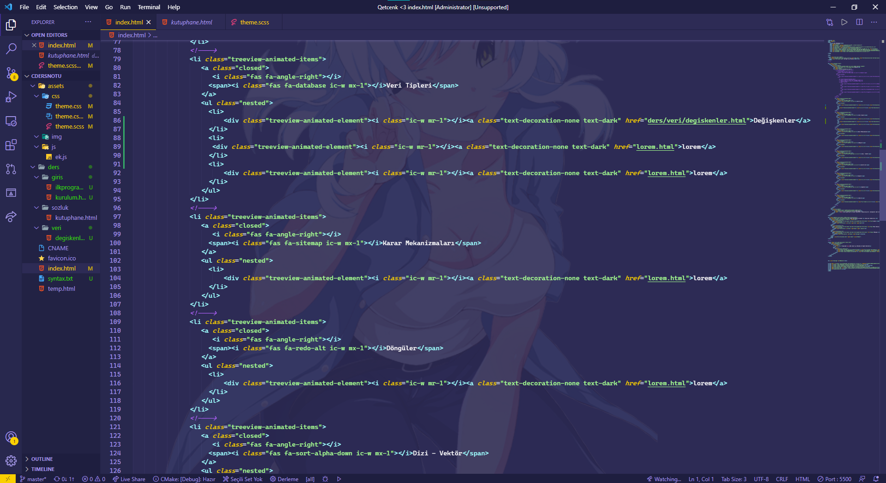

IDE olarak Microsoft'un Visual Studio Code GCC olarak yine Microsoft MinGW kullanıcam. Başka hangi ide olabilir diyorsanız Bkz. Eclipse.
Visual Studio Code şekil görünsün diyenler için iki adet tema bir adet ikon paketi önerisi.
VSCode için kurulumu yaparken node.js dahil ederek kurun. Kurduğunuz yeri iyi seçin. Mümkünse MinGW kuracağınız diskle aynı olsun. MinGW kurulumunu anlatmak çok uzun sürer o yüzden şöyle bir video bırakıyorum.
Videoda da anlatıldığı gibi C eklentileri gerekecek. C eklenti paketini kesinlikle kurun. Linki yukarıda var zaten. Ayrıca Intellisense'i de kurmanızı kesinlikle öneririm. Syntax ve .run eklentileri yazımı ve derlemeyi kolaylaştırma açısından bayağı kullanışlı.
VSCode'nin gri iç karartan tipinden ve ikonlarından pek haz etiyorum. Aynı şekilde düşünenlere sevdiğim temalardan iki öneri bırakıyorum eklenti sayfasından önizlemelerine bakabilirsiniz. Ayrıca çok hoşuma giden bir de ikon paketi bıraktım. Benim VSCode şu şekilde gözüküyor.
Daha sonra isteyen çok olursa kapsamlı olarak kullanışlı eklentilerin bir listesini veririm.